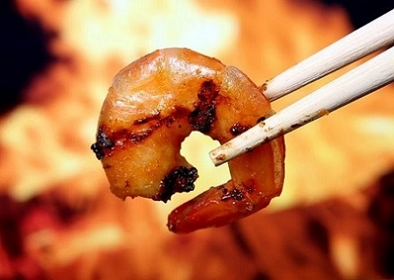
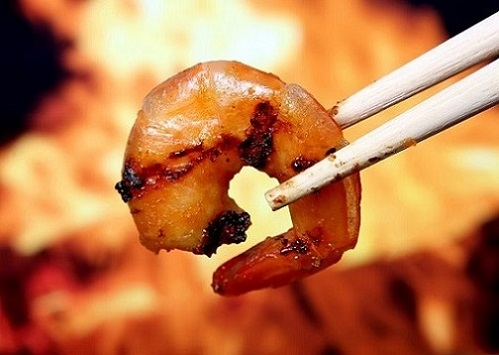

Shrimp
Pros: Highly accessible. Versatile. Easy to eat by the pound. Can also buy frozen. Can also call them "prawns" and then quote District 9 for a while.
Cons: Sometimes you have to pull off the head or shell yourself, like you have all day. Also, that dark line on the back of a shrimp is full of poop.
The Tastiest Pizza Toppings.
The Most Craveable Foods When You're Pregnant.
The Healthiest Superfoods.
 
